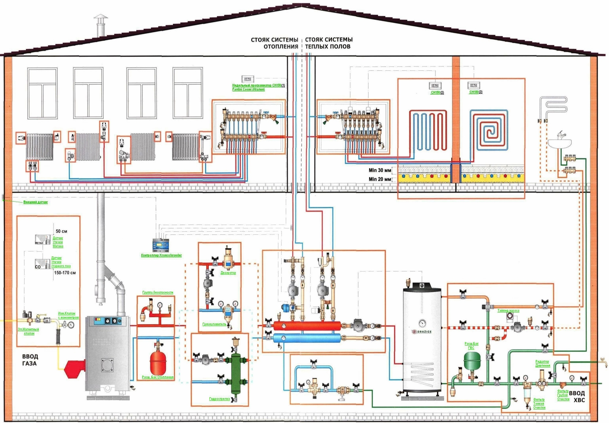

Наша компания с 2003 года выполняет монтаж систем отопления под ключ. Мы имеем большой опыт работы в данной сфере, а наши сотрудники обладают соответствующими знаниями и навыками. Наши специалисты регулярно проходят обучение новым технологиям монтажа, что позволяет применять новейшие технологи, материалы и оборудование. Мы выполняем установку систем отопления на объектах, расположенных в Киеве и Киевской области.
Монтаж может осуществляться и во время строительства домов, и в уже построенных зданиях. Монтаж системы отопления частного дома проводится в оговоренные с заказчиком сроки. Мы готовы реализовать полный спектр задач, связанных с формированием автономной системы отопления.
Наши специалисты могут провести монтаж системы отопления частного дома не только по проекту наших инженеров, но и по документации, выполненной сторонними исполнителями. Их опыт поможет избежать проектно-технических разногласий и иных недочетов в работе. Система отопления будет собрана качественно и отлажена до безупречного состояния!
Изучив план и особенности Вашего строения, наши специалисты БЕСПЛАТНО (в максимально сжатые сроки) составят для Вас подробную смету на монтажные работы, стоимость материалов и оборудования, с учетом скидки на монтажные работы.
Позвонив нам или оставив заявку на сайте, к Вам не просто выезжает наш представитель, а закрепленный за Вами до окончания сотрудничества инженер, который:
Запуск и пуско-наладочные работы производятся нашими монтажниками поэтапно, с учетом особенностей Вашей системы отопления загородного дома. Проконсультироваться со специалистом и получить технико-коммерческое предложение для Вашего дома Вы можете отправив запрос по почте. Посмотреть примеры наших работ вы можете в разделе Реализованные проекты.
